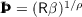

7For a perfect foresight consumer, PerfForesightCRRA shows that consumption grows by the factor , so if we do not impose the RIC, consumption would ‘want’ to grow by a factor greater than the factor by which it is being discounted.